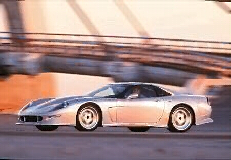
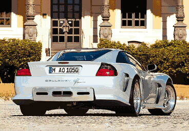

Callaway C12 Corvette


Specs
Price |
$178,700 |
Top Speed |
188mph |
Acceleration |
|
Engine |
|
0-30mph |
N/A |
Type |
V8, 16valve OVH |
0-60mph |
4.3sec |
Displacement |
5.7L(5666cc) |
0-100 |
N/A |
Power |
440hp@6300rpm |
1/4 mile |
12.7sec/116.0mph |
Torque |
383lbs-ft@5200rpm |
Weight |
3,263 lbs |
Handling |
|
Gas mileage |
|
Skidpad |
1.4g |
City |
16mpg? |
600ft slalom |
N/A |
Highway |
25mpg? |
Powertrain |
Front engined, rear wheel drive, 6 speed manual |
(? = incomplete data or unverified info, N/A = info Not Available)
Note: torque figure converted from Nm and weight figure converted from kg
Beyond the specs:
Callaway is famous for all their modified turbocharged Corvettes which all greatly improve on the performance of the Corvette model from which each was based. The C12 does the same with the C5 Corvette, but it does it without the use of turbo chargers. This car cost as more than some Ferrari's, but it outperforms any Ferrari in its price range and its quality may even match that of a comparably priced Ferrari. This car has an ok interior and as you can see from the numbers above, it performs excellently for its price range. With its stunning performance and looks, this car is perfect for not only attracting attention but also escaping it. Therefore, if you think it looks good too, and want to be able race much more expensive cars then the C12 is for you.
~Oracle